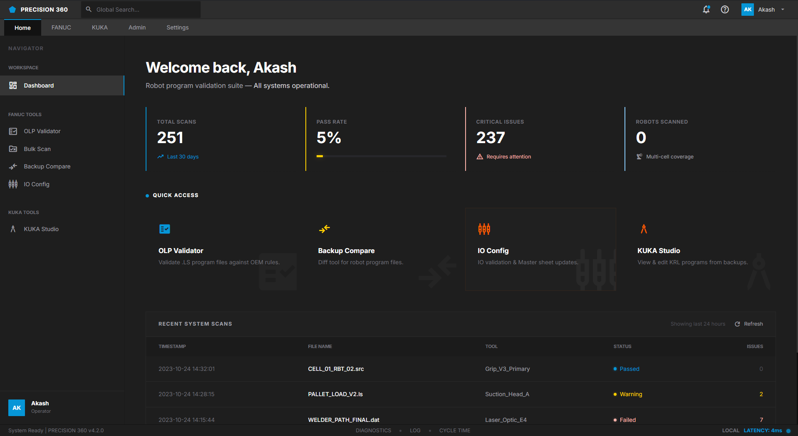
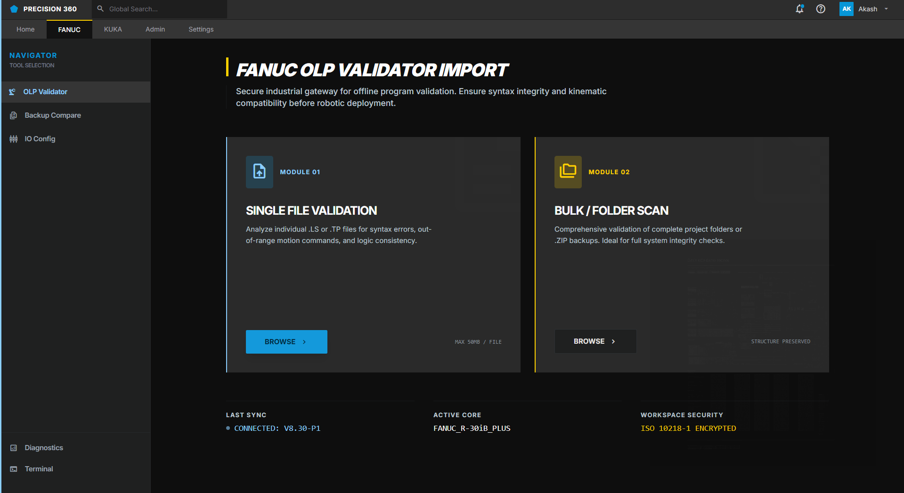
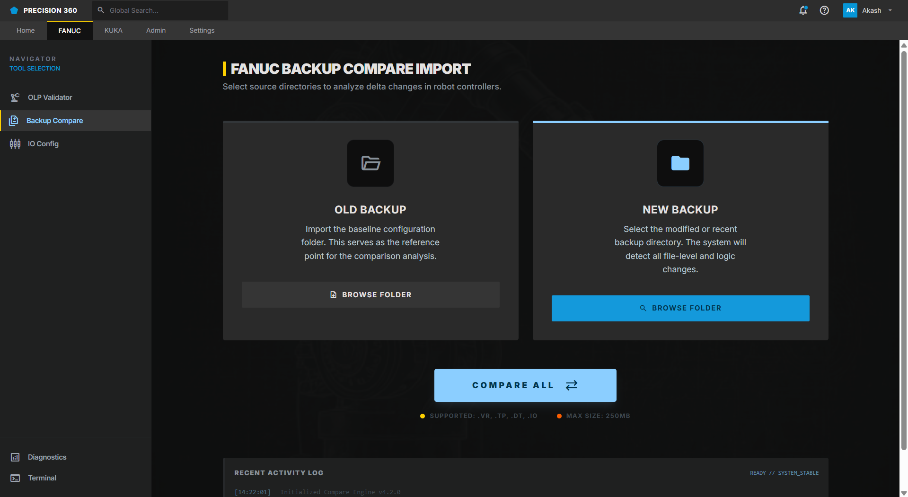
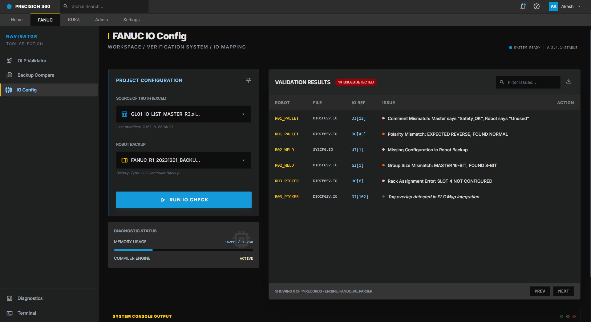
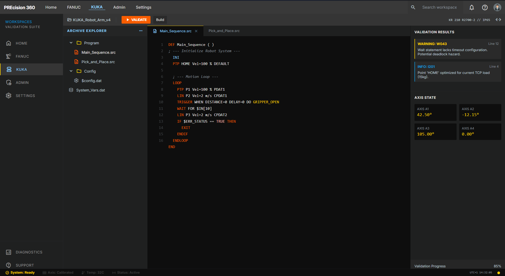
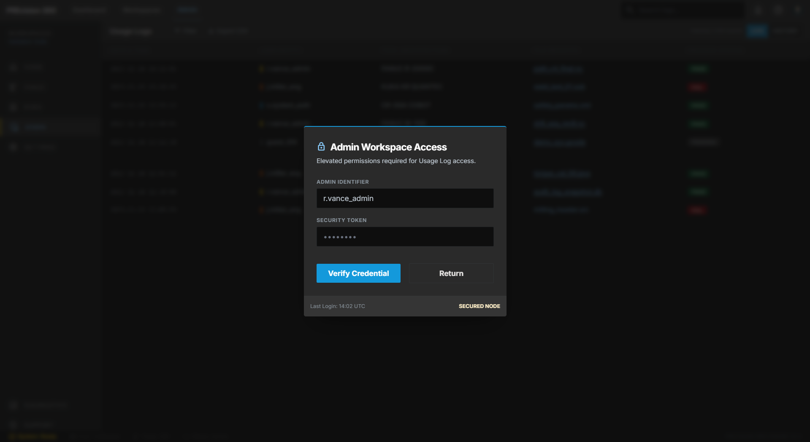
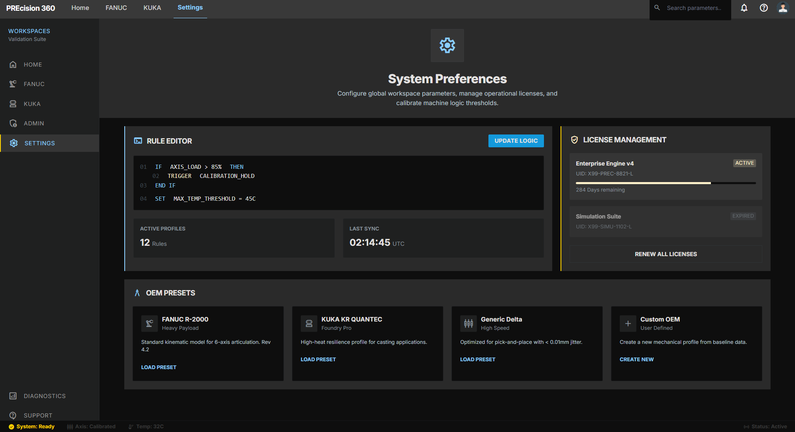

PREcision_360
A high-fidelity OLP (Off-Line Programming) Validator and CAD automation suite. Engineered to bridge the gap between virtual design and industrial robotic execution.
Process_Status
Quick Shortcuts
- [01] UI walkthrough
- [02] Validation rules
- [03] Autocorrect logic
System_Interface_Tour
The PREcision 360 interface is built using a custom web-to-desktop bridge (Flask + pywebview), providing an ultra-fast local environment for analyzing large-scale robot backups.

// 01: Central Dashboard
The command center of PREcision 360. Users can initiate system-wide scans, monitor ongoing validation cycles, and access individual module logs from a unified HUB.

// 02: Fanuc OLP Validator
Targeted validation for Fanuc robot programs. Scans for syntax errors, zone entry/exit violations, and motion path logic specific to Fanuc's instruction set.

// 03: Backup_Compare_Engine
Allows engineers to diff multiple robot backups sequentially. Identifies exactly what changed between production deployments—critical for troubleshooting offline-to-online drifts.

// 04: IO Mapping // Configuration
Visualize and modify IO assignments. This module ensures that digital signals are mapped correctly according to line standards (Maruti/Mahindra) before the code hits the hardware.

// 05: Kuka_Studio_Integration
A specialized environment for KRL (Kuka Robot Language) analysis. Deep-level parsing of Kuka program structures and automated error identification.

// 06: Admin_Control_Panel
Security and user management. Controls access levels, license activations, and system-wide rule permissions for enterprise deployments.

// 07: Global_Settings
Fine-tune the validation engine. Toggle specific rules on/off, set custom path prefixes, and adjust the sensitivity of the autocorrect logic.
Validation_Logic
The kernel implements over 20 proprietary validation rules derived from real-world manufacturing line standards.
01 // Structural Rules
- • Program name prefix validation (WELD_)
- • Home position parking enforcement
- • PR[2] Motion / Near Home pairing
02 // Safety & Zones
- • Zone entry DO/DI handshake checks
- • Wait DI 2nd check validation
- • DB Point enforcement before zone exit
03 // Motion & Speed
- • Mandatory speed & zone specification
- • Fine / DB requirement at zone exit
- • Smooth path transition validation
04 // Code Quality
- • Comment requirement before CALLs
- • Turntable/Trunnion rotation comments
- • Cleanup of commented motion points
Architecture_Brief
PREcision 360 is built as a hybrid application. A **Python-based Flask backend** handles high-performance file parsing, regex validation, and Excel generation. The frontend is a sophisticated **SPA (Single Page Application)** wrapped in **pywebview**, providing a native OS-level window experience with browser-grade UI flexibility.